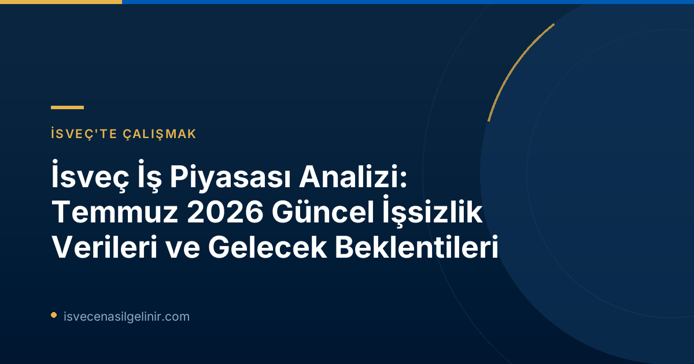

İsveç İşsizlik Raporu Temmuz 2026: Temel Bulgular
Arbetsförmedlingen tarafından açıklanan Temmuz 2026 verileri, İsveç iş piyasasında karışık sinyaller barındırıyor. Bir önceki yılın aynı ayına kıyasla işsizlik oranında bir düşüş yaşanmış olsa da, genel ekonomik zayıflık nedeniyle iş piyasasındaki toparlanma hızı yavaş seyrediyor. Lars Lindvall, Arbetsförmedlingen analiz şef vekili olarak yaptığı açıklamada, "İşsizlik, geçen yılın aynı ayına göre azalmaya devam ediyor. Ancak, iş piyasasındaki toparlanma hızı yavaş seyrediyor" ifadelerini kullandı. Temmuz 2026 sonunda, 350.000'den fazla kişi Arbetsförmedlingen'e kayıtlı işsiz olarak belirlendi. Bu sayı, işgücünün %6,5'ine denk gelmektedir ve geçen yılın aynı ayına göre 23.000'den fazla kişilik bir azalışı temsil etmektedir. Ancak, işsiz sayısı 2023 yılının aynı ayına göre hala 20.000 kişi daha fazladır.
Detaylı İşsizlik İstatistikleri (Temmuz 2026 vs. Temmuz 2025)
İsveç iş piyasasındaki mevcut durumu daha iyi anlamak için Temmuz 2026 ve Temmuz 2025 verilerini karşılaştırmalı olarak inceleyelim:
| Kategori | Temmuz 2026 Verileri | Temmuz 2025 Verileri | Değişim (2026'ya göre) |
|---|---|---|---|
| Toplam Kayıtlı İşsizler | 350.176 kişi (%6,5) | 373.311 kişi (%7,1) | 23.135 kişi azaldı |
| 18-24 Yaş Arası Genç İşsizler | 40.241 kişi (%7,4) | 42.982 kişi (%8,0) | 2.741 kişi azaldı |
| 12 Ay veya Daha Uzun Süre İşsiz Kalanlar (Uzun Süreli İşsizler) | 149.030 kişi | 153.242 kişi | 4.212 kişi azaldı |
| Açık İşsizler | 201.711 kişi | 209.164 kişi | 7.453 kişi azaldı |
| Aktivite Desteği Programlarına Katılanlar | 148.465 kişi | 164.147 kişi | 15.682 kişi azaldı |
| Yeni İş Arayışında Olanlar | 29.282 kişi | 31.785 kişi | 2.503 kişi azaldı |
| İş Bulanlar | 20.106 kişi | 20.653 kişi | 547 kişi azaldı |
| İşten Çıkarma Bildirimleri | 2.947 kişi | 4.330 kişi | 1.383 kişi azaldı |
Genç İşsizlik Oranları
18-24 yaş arası genç işsizlik oranlarına bakıldığında, Temmuz 2026'da %7,4 ile geçen yıla göre hafif bir düşüş yaşandığı görülüyor (Temmuz 2025: %8,0). Toplamda 40.241 genç işsiz bulunuyor. Bu düşüş olumlu olsa da, genç işsizliği hala genel işsizlik ortalamasının üzerinde seyretmektedir.
İstihdam ve İş Arama Aktiviteleri
Temmuz 2026'da 29.282 kişi yeni iş arayışına girerken, 20.106 kişi iş buldu. İşten çıkarma bildirimleri de geçtiğimiz yıla göre azalarak 2.947 kişi olarak kaydedildi. Bu veriler, işgücü piyasasında belli bir hareketlilik olduğunu ancak yeni işe alımların hala temkinli bir şekilde ilerlediğini göstermektedir.
İsveç İş Piyasası İçin Gelecek Beklentileri
Arbetsförmedlingen, iş piyasasının geleceği konusunda ihtiyatlı bir iyimserlik taşıyor. Lars Lindvall, "Değerlendirmemize göre, iş piyasası 2026'nın ikinci yarısında güçlenecek. 2027 yılında ise işsiz sayısının durgunluk öncesi seviyelere geri dönmesi bekleniyor" yorumunda bulundu. Birçok işveren, ekonomide daha güçlü bir talep oluşana kadar işe alım planları konusunda temkinli davranmaya devam ediyor. Bu da toparlanmanın kademeli olacağı beklentisini güçlendiriyor.
İsveç İş Piyasasında Başarı İçin İpuçları
İsveç'teki iş piyasası koşulları sürekli değişebilir. Bu dinamik ortama uyum sağlamak ve kariyer hedeflerinize ulaşmak için güncel bilgilere erişmek kritik öneme sahiptir. Özellikle kalıcı ikamet ve vatandaşlık gibi hedefleri olanlar için dil yeterliliği ve yerel kültüre uyum büyük fayda sağlar. İsveç vatandaşlığı yolunda ilerlemek için gerekli sınavlara ve süreçlere dair kapsamlı bilgiye sverigemedborgarskapsprov.com adresinden ulaşabilirsiniz.
İsveç'te iş arayanlar için Arbetsförmedlingen'in sunduğu kurslara ve aktivite destek programlarına katılım, becerilerinizi güncel tutmanız ve ağınızı genişletmeniz açısından değerli fırsatlar sunar.
İstihdam İstatistikleri Hakkında Önemli Notlar
Arbetsförmedlingen'in yayımladığı aylık basın bültenleri, kurumun kendi operasyonel istatistiklerini yansıtmaktadır. Bu istatistikler, İsveç'in resmi istatistikleri arasında yer almamaktadır. Resmi işsizlik istatistikleri, İsveç İstatistik Kurumu (Statistiska centralbyrån - SCB) tarafından yürütülen İşgücü Araştırması (Arbetskraftsundersökning - AKU) aracılığıyla açıklanmaktadır.
Ayrıca, istatistiklerin hesaplanmasında kullanılan metodolojide de bazı değişiklikler bulunmaktadır. 2026 yılı için sunulan istatistikler 16-66 yaş aralığını kapsarken, 2025 yılı istatistikleri 16-65 yaş aralığını temel almıştır. Bu farklılıklar, verileri karşılaştırırken dikkate alınması gereken bir faktördür.
Referanslar:
- Arbetsförmedlingen. (2026, 13 Ağustos). Arbetslösheten minskar trots svag arbetsmarknad. Erişim adresi: https://arbetsformedlingen.se/om-oss/press/pressmeddelanden?id=7C7DCEAC7BCA8446&pageIndex=1&year=0&uniqueIdentifier=
- sverigemedborgarskapsprov.com
İsveç'teki İş Fırsatlarını Keşfedin!
İsveç iş piyasası gelişiyor ve yeni fırsatlar sunuyor. Güncel istihdam ilanlarını takip ederek ve becerilerinizi geliştirerek bu fırsatlardan yararlanın.